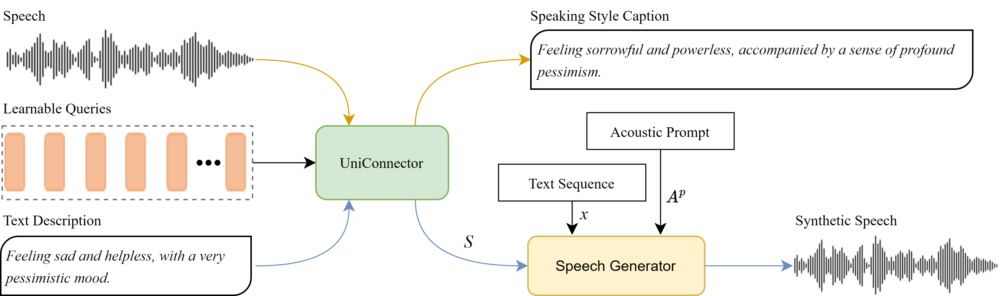

Understanding the speaking style, such as the emotion of the interlocutor's speech, and responding with speech
in an appropriate style is a natural occurrence in human conversations. However, technically, existing research on
speech synthesis and speaking style captioning typically proceeds independently. In this work, an innovative
framework, referred to as UniStyle, is proposed to incorporate both the capabilities of speaking style captioning
and style-controllable speech synthesizing. Specifically, UniStyle consists of a UniConnector and a style
prompt-based speech generator. The role of the UniConnector is to bridge the gap between different modalities,
namely speech audio and text descriptions. It enables the generation of text descriptions with speech as input and
the creation of style representations from text descriptions for speech synthesis with the speech generator.
Besides, to overcome the issue of data scarcity, we propose a two-stage and semi-supervised training strategy,
which reduces data requirements while boosting performance. Extensive experiments conducted on open-source corpora
demonstrate that UniStyle achieves state-of-the-art performance in speaking style captioning and synthesizes
expressive speech with various speaker timbres and speaking styles in a zero-shot manner.

Figure 1: Overview of the proposed UniStyle
2. Automatic speaking style captioning
We conduct automatic speaking style captioning that generates style captions for speech inputs. The following
captions are generated by StyleCap, SECap and UniStyle-L, respectively.
Input Speech
StyleCap
SECap
UniStyle-L
Ground truth
With a stume at the wrong fives. She spoke slowly, her livid high-pitched voice
resonating with energy. The startled dumbfounded girl's speech was slow and deliberate, yet full of life
With a normal pitch, the joyful man speaks at a leisurely pace, exuding low energy.
slowly and emphatically, the woman's high-energy speech held the attention of her happy
audience.
The joyful woman's high-pitched voice carried a slow yet energetic speech.
The man with a deep-speffo. A talks in a regular rhythm, speaking at an average pace and
displaying normal energy. It's important to maintain a healthy sense of speed while conveying the essence
of
The man's low-pitched tone conveys high energy while speaking naturally at a moderate
speed.
with a low pitch and customary speaking speed, the man's overall energy level appears
subdued.
The man's low-pitched voice maintains an even speaking tempo, evoking a subdued vitality.
A fuming suivaiucal quasiwaura was at a normal. The woman spoke slowly, her revulsed
voice carrying a high pitch and low energy. The dismissive girl's words were like a gentle breeze
With a high-pitched voice, the male speaker's unhurried speech conveys low energy.
Speaking speed.
despite the low energy, her heartbroken voice sustains a high pitch at a normal pace.
She talks gently, yet her downcast pitch is high.
The man with a deep-speffims to speak in. His customary rush, delivers words with low
energy at normal pitch and pace. It's not easy being a guy, as society tends to place high expectations
The man's low-pitched voice and standard speaking tempo contribute to his subdued
energy.
the male speaker's low - pitched voice delivers his message with a moderate level of
energy and a standard speed of speech.
The male speaker's low-pitched tone communicates naturally, neither too fast nor too slow,
with moderate energy.
3. Zero-shot stylistic speech synthesis with prompt speech control
We conduct zero-shot text-to-speech that synthesizes the speech with not only the timbre of a speaker prompt but
also the speaking style of a style prompt.
Speaker prompt
Style prompt
SC VALL-E
Vec-Tok Speech
UniStyle-P
UniStyle
UniStyle-L
Text: Receiving this unexpected good news, I can hardly believe it.
Text: Being alone often fills me with a deep sense of loneliness and
helplessness.
Text: I feel angry and helpless witnessing such blatant disregard for
the environment.
Text: Losing my beloved pet feels like my heart is being torn apart.
Text: Receiving this unexpected good news, I can hardly believe it.
Text: Being alone often fills me with a deep sense of loneliness and
helplessness.
Text: I feel angry and helpless witnessing such blatant disregard for
the environment.
Text: Losing my beloved pet feels like my heart is being torn apart.
4. Zero-shot stylistic speech synthesis with text description control
We conduct zero-shot text-to-speech that synthesizes the speech with the timbre of a speaker prompt, while the
speaking style is controlled by a text description. We synthesize the same text "I am very busy, Cornelia, and
Colonel Bethel is waiting; I will talk to you at dinner time." for a more intuitive comparison.
Speaker prompt
PromptStyle
Salle
UniStyle-P
UniStyle
UniStyle-L
Text description: A man with an energetic, high-pitched voice speaks
fast.
Text description: He communicated in a reserved tone, his sad speech
unfolding slowly and softly.
Text description: With a low-pitched tone, the male speaker's fast
speech emanates vibrant energy.
Text description: With a slow speaking speed and a low-pitched voice,
the despondent male speaker's audio style conveys a sense of low energy.
Text description: A woman with an energetic, high-pitched voice speaks
fast.
Text description: She communicated in a reserved tone, her sad speech
unfolding slowly and softly.
Text description: With a low-pitched tone, the female speaker's fast
speech emanates vibrant energy.
Text description: With a slow speaking speed and a low-pitched voice,
the despondent female speaker's audio style conveys a sense of low energy.
5. Discussion - attribute control
We evaluate the effectiveness of UniStyle-L from the perspective of attribute control. As we can hear, the
gender control does not work well. This discrepancy can be attributed to the fact that
gender is highly correlated with speaker timbre, which is primarily determined by the acoustic prompt rather than
the style prompt. In the context of zero-shot TTS, where
the synthetic speaker timbre aligns closely with that of the speaker prompt, such a phenomenon is expected and
reasonable.
Attribute
Speaker prompt
Style prompt
UniStyle-L
Gender
Text: Downs are sitting by the door.
A man talks
A woman talks
A man talks
A woman talks
Speaking speed
Text: And yesterday things went on just as usual.
A speaker talks with a slow rate.
A speaker talks with a standard rate.
A speaker talks with a fast rate.
A speaker talks with a slow rate.
A speaker talks with a standard rate.
A speaker talks with a fast rate.
Pitch
Text: Receiving this unexpected good news, I can hardly believe it.
A speaker talks with a low pitch.
A speaker talks with a standard pitch.
A speaker talks with a high pitch.
A speaker talks with a low pitch.
A speaker talks with a standard pitch.
A speaker talks with a high pitch.
Energy
Text: Losing my beloved pet feels like my heart is being torn apart.
Lack of energy, A speaker talks.
A speaker talks with a normal level of energy.
Full of energy, A speaker talks.
Lack of energy, A speaker talks.
A speaker talks with a normal level of energy.
Full of energy, A speaker talks.
Emotion
Text: I am very busy, Cornelia, and Colonel Bethel is waiting; I will
talk to you at dinner time.